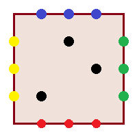
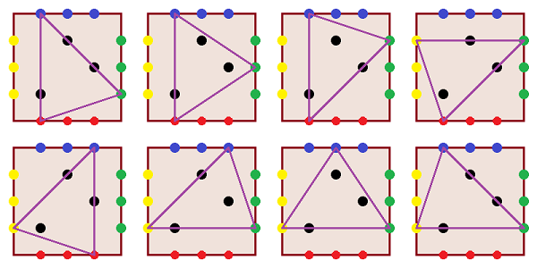

Single Round Match 585 Round 1 - Division II, Level Three
You are given an int m. Consider a square in the plane such that the corners of the square have coordinates (0, 0), (m, 0), (m, m), and (0, m). All the lattice points on the sides of this square are colored, as described below: The points with coordinates (1, 0), ..., (m-1, 0) are red. The points with coordinates (m, 1), ..., (m, m-1) are green. The points with coordinates (m-1, m), ..., (1, m) are blue. The points with coordinates (0, m-1), ..., (0, 1) are yellow. Some other lattice points are black. Each black point lies strictly inside the square. You are given two int[]s: x and y. These describe the black points: For each i, there is a black point at (x[i], y[i]).

You want to draw a triangle such that: its vertices have three distinct colors out of the set { red, green, blue, yellow }, all black points lie inside or on the boundary of the triangle. Return the number of ways to draw such a triangle.
EnclosingTriangleColorfulgetNumberint, int[], int[]intint getNumber(int m, int[] x, int[] y)
[ 1, 2, 3 ],
[ 1, 3, 2 ]
The picture shows the 8 ways to draw a triangle.

[ 1, 1, 6, 6 ],
[ 1, 6, 1, 6 ]
[ 2 ],
[ 2 ]
[ 2, 6, 7, 6 ],
[ 7, 7, 9, 3 ]
[ 7, 6, 5, 4, 3 ],
[ 1, 4, 7, 10, 13 ]
[ 117, 183, 181, 118, 132, 128, 184, 150, 168, 121,
179, 132, 168, 182, 119, 117, 180, 120, 175, 177,
116, 175, 128, 163, 181, 178, 123, 118, 172, 143,
163, 157, 179, 122, 121, 119, 157, 122, 150, 180,
137, 177, 125, 123, 172, 125, 137, 143, 120, 178 ],
[ 157, 157, 132, 163, 181, 180, 150, 116, 181, 125,
125, 119, 119, 163, 132, 143, 172, 172, 179, 178,
150, 121, 120, 118, 168, 123, 178, 137, 120, 117,
182, 117, 175, 177, 175, 168, 183, 123, 184, 128,
118, 122, 179, 122, 180, 121, 182, 183, 128, 177 ]